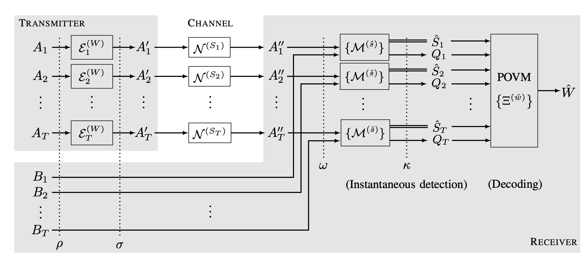

Research
-

Utility of Entanglement for Joint Communication and Instantaneous Detection in Quantum Channels
We investigate how quantum entanglement can enhance the joint performance of communication and instantaneous detection of a binary state over a noisy quantum channel, specifically one that may depolarize or erase the input with certain probabilities. By establishing a baseline of the optimal communication-detection trade-off achievable by any unentangled protocol, and by contructing an entangled protocol based on the superdense coding, we show that quantum entanglement can be simultaneously and significantly beneficial for joint communication and instantaneous detection. The results are presented in [J8]. -
Capacity of Linear Computation over (Noiseless) Quantum Multiple Access Channel
Computation over quantum multiple access channels (MAC) is intriguing—even in the noiseless setting—because quantum entanglement enables distributed inputs to be combined and retrieved, thereby reducing the communication resources required (bearing a resemblance to a wireless MAC). We study, from an information-theoretic perspective, the optimal download cost when a central node desires to retrieve a linear function by receiving quantum resources from distributed storage servers who share entanglement [J5,J9]. Furthermore, constrained entanglement patterns [J5] and the presence of erasures (stragglers) [J7] introduce additional layers of complexity and novelty, posing challenges that extend beyond those encountered in the classical counterpart. -
Generic Capacity of K-user Linear Computation Broadcast
Given the difficulty of the general K-user linear computation broadcast (LCBC) problem, we study the generic capacity, defined (when it exists) as the capacity of an LCBC instance chosen at random, with demand and side-information constrained to fixed dimensions. This perspective bypasses the difficulty of analyzing individual instances whose capacities are hard to determine, while still capturing the capacity of almost all LCBC instances. One of our results in [J3] show that the optimal download cost of nearly all LCBC problems with a d-dimensional dataset, m-dimensional demand, and m'-dimensional side information is md/(m+m'), when K ≥ d ≥ m+m'. -

Capacity of Linear Computation Broadcast
The K-user linear computation broadcast (LCBC) problem seeks the information-theoretic optimal cost of broadcasting a common message that simultaneously enables K distributed users to compute dinstinct linear functions of a database, given their own linear side information. This framework generalizes the well-studied index coding problem (known to be NP-hard) as a special case. In [J4], we established the complete solution for K = 3 under arbitrary demand and side-information structures. In [J1], we investigated the setting where the central server has only partial knowledge of the database.